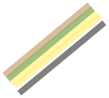

Kopen
Opbergen
Consumeren
Verzamelen
Weggooien
Inleveren / Doneren

Route
➜Wat wordt er het meest opgeborgen?
➜Hoeveel wordt er in verhouding weggegooid?
➜Kopen
Opbergen
Consumeren
Verzamelen
Weggooien
Inleveren / Doneren
Route
➜Wat wordt er het meest opgeborgen?
➜Hoeveel wordt er in verhouding weggegooid?
➜